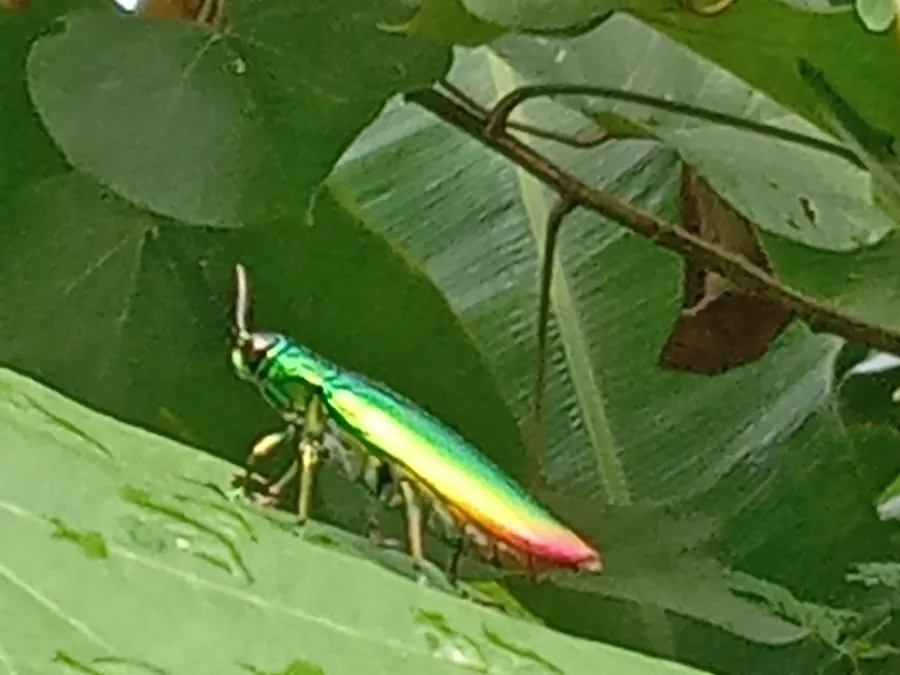

昆虫 · 动物界
日本吉丁 Chrysochroa japonica

鞘翅呈金属绿与铜色光泽的大型吉丁，体形修长如梭，常停在树干和花上，是日本和东亚著名的观赏甲虫。
- 分类
- 门节肢动物门纲昆虫纲目鞘翅目科吉丁科属吉丁属
- 栖息环境
- 阔叶林林缘、树干和花丛，成虫夏季活动
- 地理分布
- 日本和中国部分地区
- 保护级别
- 暂无评估
物种志
日本吉丁成虫体长 30–40 mm，体形修长，呈纺锤状。体表具强烈的金属光泽，前胸背板与鞘翅呈深绿、铜绿或蓝绿色，鞘翅上常有纵脊和淡黄色的横带或斑点，在阳光下色彩变幻。触角短，呈锯齿状。
日本吉丁分布于日本和中国部分地区，成虫多出现在夏季，常在树干、花丛和林缘活动，取食花蜜和嫩叶。它的幼虫生活在枯木和衰弱树木的木质部中，蛀食形成层，化蛹前在木材内筑室。吉丁的金属色泽来自体壁的多层结构对光线的干涉，而不是单纯的色素，因此制成标本后仍能保持光泽。日本吉丁因色彩艳丽而受到甲虫收藏者的喜爱，也常出现在自然观察和生态摄影中。它目前没有受到明显的生存威胁，但原始阔叶林的减少会影响其种群。
形态与习性
- 食性成虫取食花蜜和嫩叶，幼虫蛀食枯木
- 体长30–40 mm
- 体色金属绿与铜色，鞘翅常有淡黄斑带
- 光泽成因体壁多层结构对光线的干涉，而非色素
- 幼虫生活在枯木和衰弱树木的木质部中
- 威胁原始阔叶林减少会影响其种群
趣味知识
- 日本吉丁的金属色来自体壁结构对光的干涉，死后仍不会褪色。
- 它的体形像一枚纺锤，鞘翅上的纵脊在光下像金属拉丝。
- 吉丁的幼虫在枯木里蛀食，化蛹前会筑一个专门的蛹室。